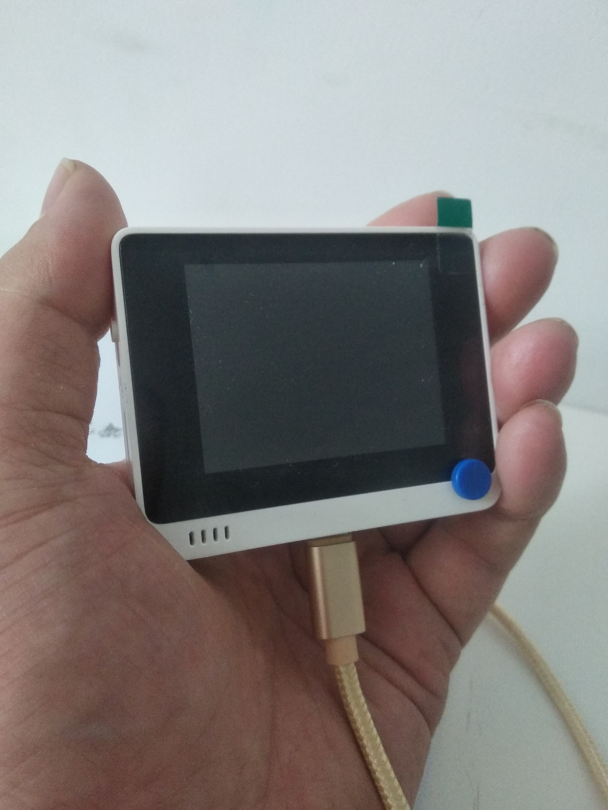

周五收到一款矽递科技的arduino开发板wio terminal，与Arduino和MicroPython兼容，基于ATSAMD51的微控制器,具有Realtek RTL8720DN支持的的无线连接，还带有一个240X320的彩色液晶屏，可以做为树莓派的显示器，很方便了。 话说矽递科技是一家专注物联网硬件解决方案的高新技术企业，全球前三的开源硬件供应商，牛逼了，以至于这款产品的英文资料比中文资料还丰富。
对于硬件相关的领域，我还是一个小白，但是对于物联网或者硬件相关的创客产品，我是非常感兴趣的，这不，拿到这款产品，周末在家就和小朋友一起研究起来。
我给自己的设置的第一个目标就是能写一个hello world的程序，在这款wio terminal显示出来。
开箱
这款开发板相当的小巧，包装盒和一副扑克牌差不多大小，拆开包装，包含一个wio ternimal掌机，一个数据线、说明书和贴纸,还额外赠送一个5-way的按钮。
 |  |  |
打开开关，默认的程序是个类似超级玛丽的小游戏,因为我已经上传了新的程序，这个默认的程序没有拍照截图。
 |  |  |
 |  |  |
开发环境搭建
作为一个小白，我需要从最基础的开发知识入手开始学习，那么第一步就是看官方的入门资料: Wio Terminal入门教程,这个网页包含了这个产品的技术指标和开发入门。
根据这篇文章的指导，下载Arduino IDE工具，打开Blink示例,编译上传，你就可以看到蓝色呼吸灯以一秒的间隔闪亮。
注意安装好Arduino IDE之后，需要在File（文件） > Preference（偏好设置）菜单中最下面的Additional Boards Manager URLs中输入https://files.seeedstudio.com/arduino/package_seeeduino_boards_index.json,

点击 Tools（工具） > Board（开发板）> Boards Manager... ，在搜索栏中搜索关键字Wio Terminal后，点击并安装它。

然后就能在开发版中选择seeedunio wio terminal开发板了。
端口根据实际情况选择，我在windows操作系统中中端口是COM5,你如果不确定，可以通过关闭打开wio terminal看看哪个端口有变化，有变化的就是wio terminal对应的端口。
在开发程序的时候，可能会依赖额外的库，你需要把这些库加入进来，比如LCD的库、绘图库等等。
官方英文版有详细的介绍，但是中文版没有，所以学习还是从英文资料入手。
官方demo
在进入我的第一个hello world程序之前，我想运行一下官方的demo程序，熟悉一下编译、上传的流程。
我选定的是陀螺仪的演示程序。
它在wio terminal屏幕上画出三轴的角度，你可以通过转动wio terminal看曲线的变化。

我和我们家的小朋友一起学习的，中间他还帮了我我一个大忙。小朋友通过拍打放置wio terminal的桌子来观察曲线的变化，突然想到是不是可以通过它实现一个地震检测仪，应该比张衡的那个更精准吧。
这个程序按照教程的指导一步步走下来即可，它需要Seeed_Arduino_Linechart库来画折线图、通过Seeed_Arduino_LIS3DHTR库来访问陀螺仪。
在arduino ide中点击上传，就可以把这个程序编译上传了。
使用tinygo
tinygo是一个以Go语言编译嵌入式程序的编译器。因为我最近几年偏重Go语言开发，所以我想尝试使用Go语言写一个hello world的程序。
按照tinygo官方的文档, tinygo已经支持了Seeed Wio Terminal。 太cool了，可以使用Go语言写一些程序了。
于是我写了一个hello world的简单程序:
1 | package main |
使用命令tinygo flash -target=wioterminal hello.go去上传。
wio termnial两眼一黑，居然死了。重新关开机，windows显示未知的设备!!!
赶快抢救，尝试按钮滑动两次的方式，一直没有效果。网上赶快搜资料，找不到解决办法。
我有点感觉我手贱了。
我放弃了，准备改天问问客服，有没有抢救办法。
我家小朋友不死心，来回的开、关、开、开、关.......
突然小朋友喊到，『好了！！！』。我过去一看，windows已经识别出来这个设备了，赶快把陀螺仪的程序刷上去，果然好了。
我决定放弃尝试tinygo了，还是乖乖使用arduino ide进行开发好了。
第一个程序: hello world
切回到arduino ide之后，我决定还是按照官方的教程，去写第一个hello world程序。
一个外国小哥做了很多的视频教程，youtube上有，b站上也能搜到，不过是英文的。 中文字幕官方也上传了一些，貌似比较少。
反正我是写第一个hello world程序，找一个简单的视频看看就理解了。
这个程序将屏幕背景设置为红色，并且在屏幕中央显示 hello smallnest!字体(中文字体我还没研究)：
1 |
|
程序首先初始化屏幕，将背景设置成红色。
然后设置字体的颜色为黑色，大小为3,最大为7。
最后画出字符串。
编译上传，最后屏幕显示如下：

第一个程序成功了。休息一下，改天进一步研究。
如何购买
以下是这款产品的介绍，你可以在淘宝官方店进行购买，价格279元。